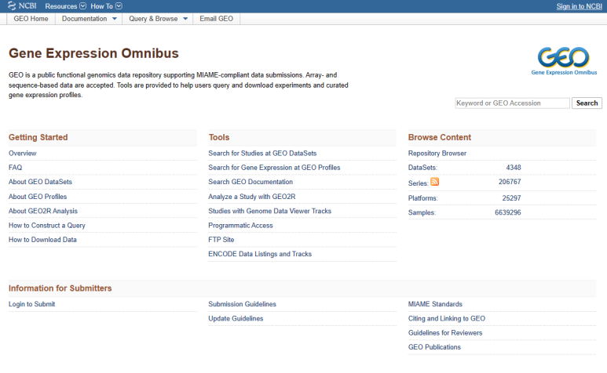
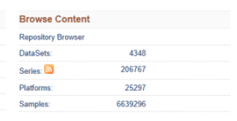
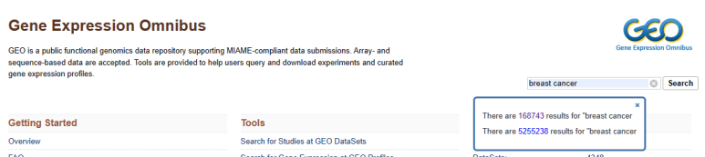
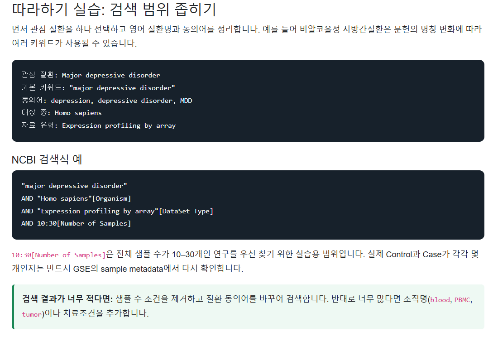
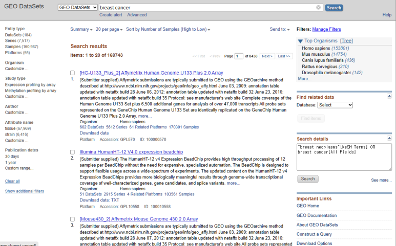
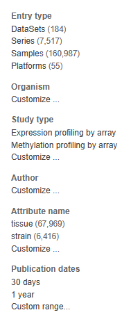
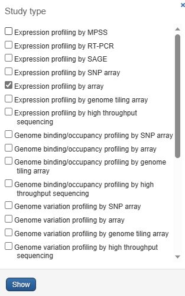
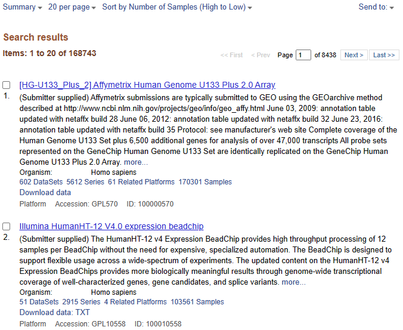

GEO란?
Gene Expression Omnibus(GEO)는 미국 NCBI가 운영하는 공개 기능유전체 저장소입니다. 연구자가 제출한 원자료(raw data), 가공된 발현자료(processed data), 실험 및 샘플 설명(metadata)을 보관하고 누구나 검색·다운로드할 수 있게 제공합니다. Microarray와 RNA sequencing 기반 유전자 발현뿐 아니라 methylation, ChIP-seq, ATAC-seq 등 다양한 기능유전체 자료가 포함될 수 있습니다.
논문 투고 규정이나 연구비 지원기관의 데이터 공개 정책에 따라 연구자가 GEO에 데이터를 등록하는 경우가 많습니다. 따라서 GEO는 단순히 논문 목록을 검색하는 곳이 아니라, 기존 연구의 데이터를 다시 분석하거나 여러 연구를 통합하는 데 사용할 수 있는 공공 데이터 저장소입니다.

현재 공개된 데이터 규모 확인하기
GEO 홈페이지의 Browse Content에서는 현재 공개되어 검색할 수 있는 주요 레코드 수를 확인할 수 있습니다. 연구가 새로 공개되거나 기존 레코드가 갱신되므로 숫자는 고정값이 아니며, 접속한 시점의 현황으로 이해해야 합니다.

| 항목 | 의미 | 주의할 점 |
|---|---|---|
| DataSets | NCBI가 분석하기 쉬운 형태로 재구성한 curated DataSet(GDS) | 모든 GSE가 GDS로 만들어지는 것은 아니므로 Series보다 훨씬 적습니다. |
| Series | 연구자가 제출한 연구 단위(GSE) | 우리가 분석할 후보 연구는 주로 여기에서 찾습니다. |
| Platforms | 측정 기술과 probe 구성을 설명하는 플랫폼(GPL) | 같은 플랫폼이 여러 GSE에서 반복 사용될 수 있습니다. |
| Samples | 개별 실험 샘플(GSM) | 한 환자에서 여러 시점·조직을 측정하면 여러 GSM이 될 수 있으므로 환자 수와 같지 않을 수 있습니다. |
GEO accession 이해하기
| Accession | 의미 | 예 |
|---|---|---|
| GSE | 연구 전체(Series) | GSE146446 |
| GSM | 개별 샘플 | GSM4385564 |
| GPL | 측정 플랫폼 | GPL10558 |
| GDS | NCBI가 재구성한 curated DataSet | GDSxxxx |
키워드 검색

breast cancer
major depressive disorder
colorectal cancer더 정확한 검색에는 필드 조건을 사용할 수 있습니다.
"breast cancer" AND "Homo sapiens"[Organism]
AND "Expression profiling by array"[DataSet Type]Homo sapiens 검색에서 cell line 제외하기
"Homo sapiens"[Organism] 조건은 사람에게서 직접 채취한
혈액이나 조직만 의미하지 않습니다. MCF-7, A549, HEK293처럼 사람에서
유래한 세포주(cell line)도 종 정보가 Homo sapiens로
기록될 수 있습니다. 환자 또는 건강인 검체를 찾는 실습이라면 세포주
연구가 함께 검색되는지 확인해야 합니다.

기본 제외 검색식
"major depressive disorder"
AND "Homo sapiens"[Organism]
AND "Expression profiling by array"[DataSet Type]
NOT "cell line"[All Fields]
NOT "cell line"[All Fields]는 제목·초록·샘플 설명 등에
cell line이 포함된 레코드를 검색 결과에서 제외합니다. 검색
결과가 여전히 많다면 실제 검체를 나타내는 키워드를 추가할 수
있습니다.
AND (blood[All Fields] OR PBMC[All Fields] OR tissue[All Fields])cell culture처럼 다른
표현을 사용한 세포주 연구는 남을 수도 있습니다. 최종 선정 전에는
GSE의 Overall design과 각 GSM의
Source name, Characteristics를 직접 확인하세요.
검색 결과 필터링



Microarray 권장 필터
- Organism: Homo sapiens
- Study type: Expression profiling by array
- 명확한 Control과 Case
- 가능하면 하나의 GPL
- Series Matrix 또는 processed data 제공
검색 결과 정렬

샘플 수 정렬은 후보를 찾는 데 유용하지만, 샘플 수만으로 데이터셋을 결정하지 않습니다. 조직, 처리조건, 반복측정, batch와 metadata 완전성을 함께 확인합니다.
따라하기 실습: 검색 범위 좁히기
먼저 관심 질환을 하나 선택하고 영어 질환명과 동의어를 정리합니다. 예를 들어 비알코올성 지방간질환은 문헌의 명칭 변화에 따라 여러 키워드가 사용될 수 있습니다.
관심 질환: Major depressive disorder
기본 키워드: "major depressive disorder"
동의어: depression, depressive disorder, MDD
대상 종: Homo sapiens
자료 유형: Expression profiling by arrayNCBI 검색식 예
"major depressive disorder"
AND "Homo sapiens"[Organism]
AND "Expression profiling by array"[DataSet Type]
AND 10:30[Number of Samples]
NOT "cell line"[All Fields]
10:30[Number of Samples]은 전체 샘플 수가 10–30개인
연구를 우선 찾기 위한 실습용 범위입니다. 실제 Control과 Case가 각각
몇 개인지는 반드시 GSE의 sample metadata에서 다시 확인합니다.
NOT "cell line" 또는 샘플 수 조건을 제거하고 질환
동의어를 바꾸어 검색합니다. 반대로 너무 많다면
조직명(blood, PBMC,
tumor)이나 치료조건을 추가합니다.
GEO 데이터베이스를 이해하기 위한 추천 논문
GEO가 왜 만들어졌고 데이터가 어떻게 구성되는지 이해하려면 다음 두 논문이면 충분합니다. 교육자료나 논문 Methods에서 GEO 자체를 소개하고 인용할 때도 사용할 수 있습니다.
| 권장 논문 | 읽을 이유 |
|---|---|
|
Clough et al., 2024 NCBI GEO: archive for gene expression and epigenomics data sets: 23-year update Nucleic Acids Research · DOI |
현재 GEO의 규모, 원자료·가공자료·metadata 저장 구조, 검색·다운로드 및 GEO2R 같은 주요 기능을 정리한 최신 종합 논문입니다. 우선 추천합니다. |
|
Edgar, Domrachev & Lash, 2002 Gene Expression Omnibus: NCBI gene expression and hybridization array data repository Nucleic Acids Research · DOI |
GEO의 출발점과 Platform–Sample–Series라는 핵심 데이터 구조가 왜 설계되었는지 이해하기 좋은 원 논문입니다. |
독립 실습: 분석하기 쉬운 GSE 찾기
권장 선정 조건
피하면 좋은 복잡한 데이터셋
- Control과 Case 외에 여러 치료군·용량·시점이 혼합된 연구
- 같은 환자의 치료 전후처럼 반복측정 구조가 있는 연구
- 혈액, 조직과 세포주 등 서로 다른 source가 함께 있는 연구
- 여러 GPL의 샘플을 한 번에 비교해야 하는 연구
- 그룹 정보가 제목이나 characteristics에서 명확하지 않은 연구
- processed matrix 또는 probe annotation을 확인하기 어려운 연구
이런 연구가 나쁜 데이터라는 의미는 아닙니다. 다만 공변량, blocking 또는 복잡한 contrast가 필요하므로 첫 실습에는 적합하지 않을 수 있습니다.
후보 데이터셋 기록표
찾은 데이터셋을 다음 형식으로 정리하세요. Step 03에서 이 기록을 이용해 실제 분석 가능성을 평가합니다.
| 관심 질환 | 예: Major depressive disorder |
|---|---|
| 사용한 검색어 | 질환명, 동의어, 조직명 |
| GSE accession | GSE________ |
| GPL accession | GPL________ |
| 조직·세포 | |
| Control 정의 / n | |
| Case 정의 / n | |
| 추가 조건 | 나이, 성별, 치료, 시점, batch 등 |
| GEO2R 가능 여부 | 가능 / 불가능 / 확인 필요 |
| 선정 또는 제외 이유 |
선정 후 확인할 질문
- 내가 비교하려는 두 그룹을 한 문장으로 설명할 수 있는가?
- Case − Control의 방향을 명확히 정의했는가?
- 두 그룹에서 조직, 플랫폼과 측정시점이 동일한가?
- 샘플 수가 아니라 metadata를 직접 확인했는가?
- 원 논문의 실험 설계와 제외기준을 읽었는가?